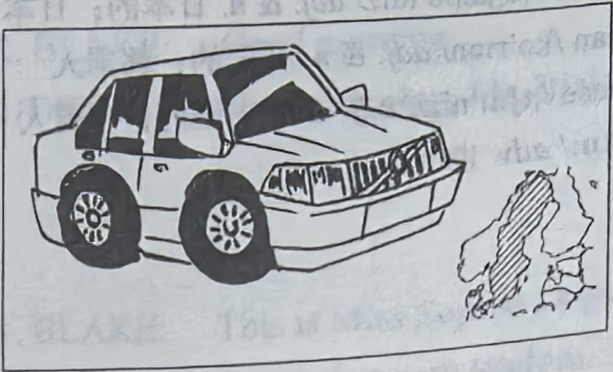
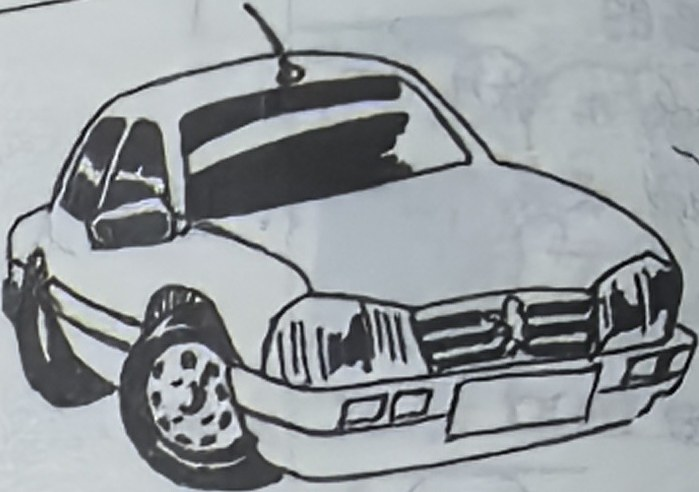
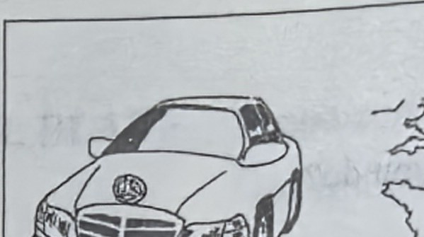
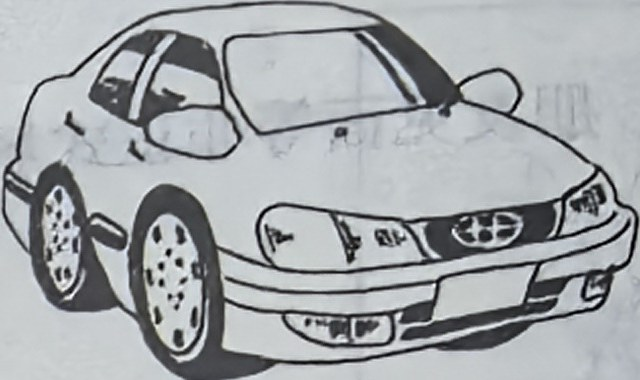
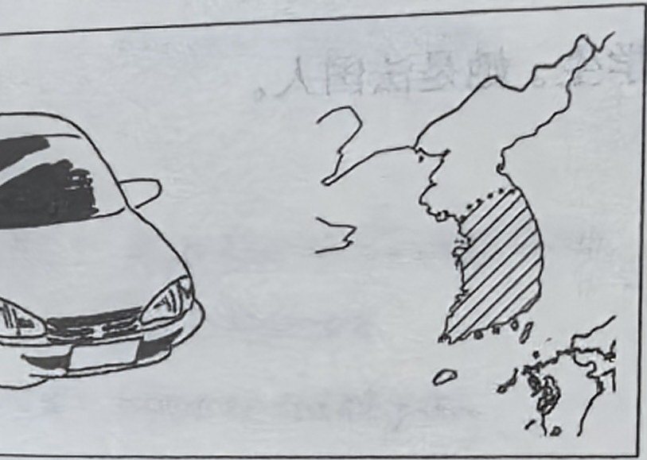
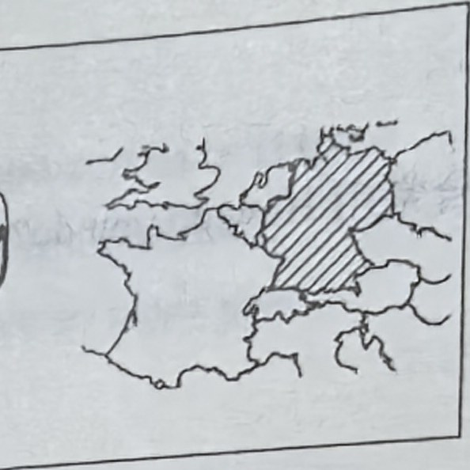
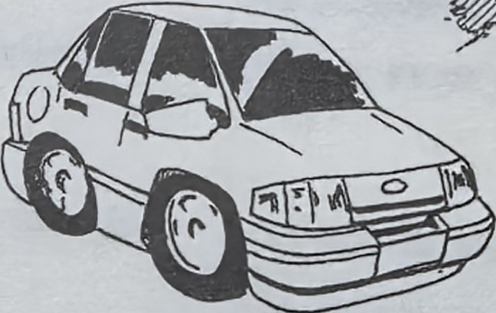
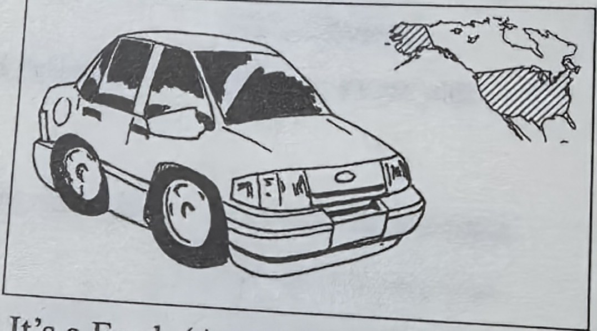
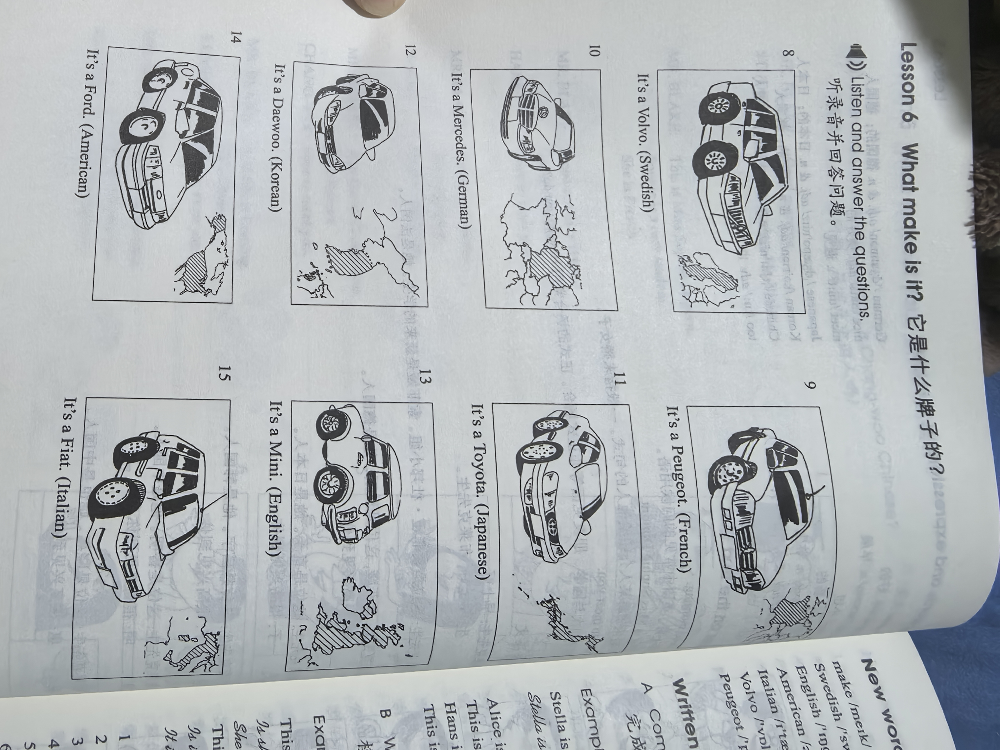
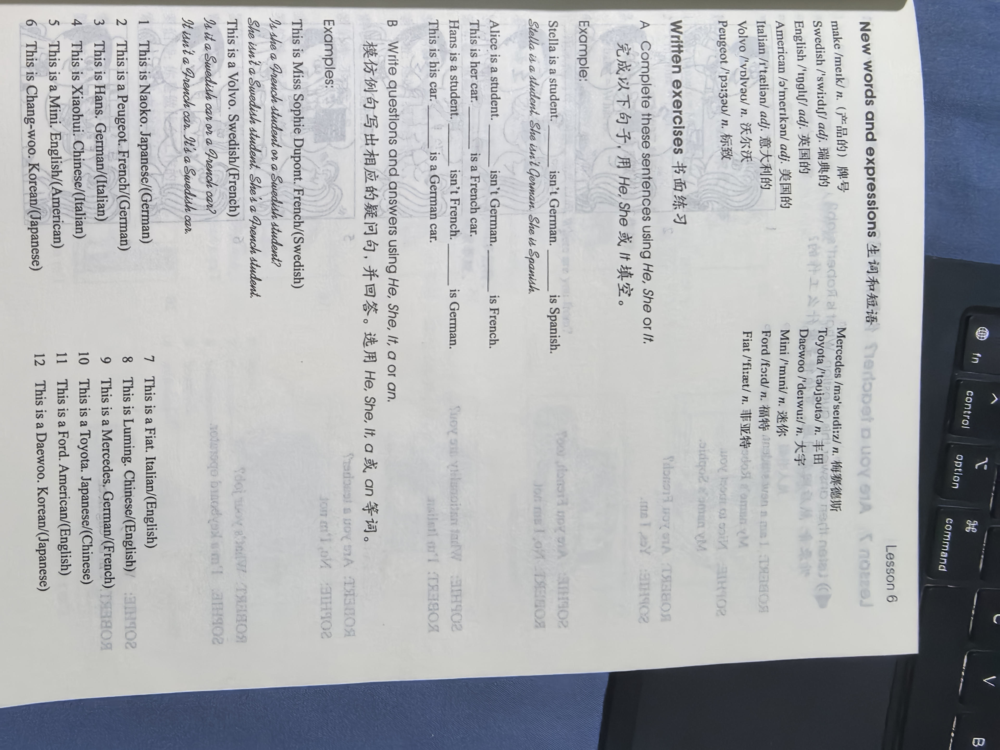

Lesson content · 课文
Lesson 6: What make is it? · 它是什么牌子的？
Listen and answer the questions. 听录音并回答问题。








New words and expressions · 生词和短语
| Word · 单词 | Pronunciation · 音标 | Meaning · 词义 |
|---|---|---|
| make | /meɪk/ | n. （产品的）牌号 |
| Swedish | /ˈswiːdɪʃ/ | adj. 瑞典的 |
| English | /ˈɪŋɡlɪʃ/ | adj. 英国的 |
| American | /əˈmerɪkən/ | adj. 美国的 |
| Italian | /ɪˈtæliən/ | adj. 意大利的 |
| Volvo | /ˈvɒlvəʊ/ | n. 沃尔沃 |
| Peugeot | /ˈpɜːʒəʊ/ | n. 标致 |
| Mercedes | /məˈseɪdiːz/ | n. 梅赛德斯 |
| Toyota | /tɔɪˈəʊtə/ | n. 丰田 |
| Daewoo | /ˈdeɪwuː/ | n. 大宇 |
| Mini | /ˈmɪni/ | n. 迷你 |
| Ford | /fɔːd/ | n. 福特 |
| Fiat | /ˈfiːæt/ | n. 菲亚特 |
Practice · 课文练习
Written exercises · 书面练习
A. He, She or It
Complete these sentences using He, She or It. 完成以下句子，用 He、She 或 It 填空。
Example · 例句
Stella is a student. She isn’t German. She is Spanish.
-
textbook: A. He, She or It — Alice is a student. ____ isn’t German. ____ is French.
-
textbook: A. He, She or It — This is her car. ____ is a French car.
-
textbook: A. He, She or It — Hans is a student. ____ isn’t French. ____ is German.
-
textbook: A. He, She or It — This is his car. ____ is a German car.
B. Questions and answers · 提问并回答
Write questions and answers using He, She, It, a or an. 模仿例句写出相应的疑问句，并回答。选用 He、She、It、a 或 an 等词。
Example · 例句
This is Miss Sophie Dupont. French / (Swedish)
Is she a French student or a Swedish student?
She isn’t a Swedish student. She’s a French student.
This is a Volvo. Swedish / (French)
Is it a Swedish car or a French car?
It isn’t a French car. It’s a Swedish car.
-
textbook: B. Questions and answers · 提问并回答 — This is Naoko. Japanese / (German)
-
textbook: B. Questions and answers · 提问并回答 — This is a Peugeot. French / (German)
-
textbook: B. Questions and answers · 提问并回答 — This is Hans. German / (Italian)
-
textbook: B. Questions and answers · 提问并回答 — This is Xiaohui. Chinese / (Italian)
-
textbook: B. Questions and answers · 提问并回答 — This is a Mini. English / (American)
-
textbook: B. Questions and answers · 提问并回答 — This is Chang-woo. Korean / (Japanese)
-
textbook: B. Questions and answers · 提问并回答 — This is a Fiat. Italian / (English)
-
textbook: B. Questions and answers · 提问并回答 — This is Luming. Chinese / (English)
-
textbook: B. Questions and answers · 提问并回答 — This is a Mercedes. German / (French)
-
textbook: B. Questions and answers · 提问并回答 — This is a Toyota. Japanese / (Chinese)
-
textbook: B. Questions and answers · 提问并回答 — This is a Ford. American / (English)
-
textbook: B. Questions and answers · 提问并回答 — This is a Daewoo. Korean / (Japanese)
Practice worksheet · 配套练习
A. Questions
Write a question for each answer. 根据答案写出相应的疑问句。
Example · 例句
What nationality is she? — She’s Japanese.
What make is his car? — His car’s French.
-
worksheet: A. Questions — Her car’s Swedish.
-
worksheet: A. Questions — He’s French.
-
worksheet: A. Questions — She’s Chinese.
-
worksheet: A. Questions — His car’s Japanese.
B. Structure
Write an affirmative and a negative sentence for each prompt. 模仿例句完成以下练习。
Example · 例句
It — German car / not Japanese car. → It’s a German car. It isn’t a Japanese car.
-
worksheet: B. Structure — Marie — French student / not Italian student
-
worksheet: B. Structure — She — English teacher / not Chinese teacher
-
worksheet: B. Structure — He — Chinese student / not Korean student
C. Short forms
Rewrite using short forms. 用缩写形式抄写以下句子。
Example · 例句
Here is your pen. → Here’s your pen.
-
worksheet: C. Short forms — It is not American.
-
worksheet: C. Short forms — It is English.
-
worksheet: C. Short forms — He is Italian.
-
worksheet: C. Short forms — She is not Swedish.
-
worksheet: C. Short forms — That is my teacher.
-
worksheet: C. Short forms — He is not French.
-
worksheet: C. Short forms — She is German.
Original images · 原图对照
Expand a page to compare it with the transcription. Open the original in a new tab to zoom in.
展开原图核对文字，也可以在新标签页打开原图放大查看。
Lesson text and oral practice · 课文与口头练习
Open original · 打开原图 ↗ Download original · 下载原图


Vocabulary, notes and written exercises · 生词、注释与书面练习
Open original · 打开原图 ↗ Download original · 下载原图



Grammar practice · 语法练习
I. Rewrite using he, she, or it
Example: That book is French. -> It is a French book.
- That teacher is English.
- This car is Swedish.
- This watch is German.
- That student is Korean.
- This house is nice.
- That car is Japanese.
- Our teacher is good.
- This student is new.
- This car is Italian.
II. Answer using the words given
- Is it a Swedish car or an American car? (American)
- Is Hans a German student or a French student? (German)
- Is Fiat a French car or an Italian car? (Italian)
- Is he a Chinese teacher or a Korean teacher? (Korean)
- Is it an English car or a French car? (English)
- Is Sophie a new student or an old student? (new)
- Is Peugeot a German car or a French car? (French)
- Is she a Korean student or a Japanese student? (Japanese)
- Is Linda American or English? (American)
- Is he French or Italian? (French)
- Is Toyota Japanese or American? (Japanese)
- Is Fiat French or Italian? (Italian)
- Is Naoko Korean or Japanese? (Japanese)
- Is she German or Swedish? (Swedish)
- Is Li Ming Chinese or Japanese? (Chinese)
- Is Daewoo Italian or Korean? (Korean)
Your notes and answers
Use this space for longer responses or exercises that do not have an individual answer box.